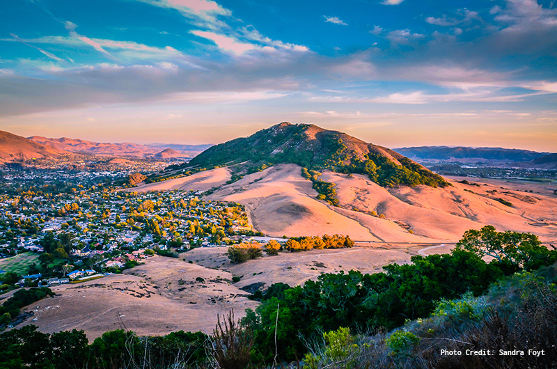

Why not SLO down in San Luis Obispo for your next weekend trip?

San Luis Obispo is basically the halfway point between San Francisco and Los Angeles. It’s a great place for a stopover during a road trip between the two, but it’s also worth visiting in its own right. What makes SLO stand out from many other charming California coastal towns is that it’s kind of like an influx of many different vibes. You got your beach scene, your wine scene, your food scene, your college scene— SLO is home to Cal Poly, which offers just enough of a college atmosphere to provide decent nightlife without turning it into a total party town. And if you’re a parent that’s interested in a wine-tasting weekend, SLO is a more family friendly option than Napa and Sonoma.
SLO is also home to some truly unique places to stay, which you’ll appreciate if the more recent trend of clinically minimal hotel rooms isn’t quite your jam. So let’s get to it…
Where to Stay
Rates are based on a one-night search for January 2018.
For couples & families — The Apple Farm Starting at $239/Night
Maybe you’re an east coast transplant living out west but you’re missing that fall-in-New-England lifestyle right about now. Apple cider doughnuts, upstate farms, the whole shebang. Well, the Apple Farm could be your home away from home. In true B&B fashion no two rooms are exactly alike, and they somehow manage to pull off that grandma’s cottage aesthetic without feeling stuffy. The beautiful, well-kept grounds include a working waterwheel, a restaurant (which I’d recommend hitting up for brunch), and a gift shop where you can buy the apple butter they make on site. Other fancy amenities include complimentary wine on check-in and a fireplace in each room. If you’re one of those people who can’t shut up about fall being their favorite season, well, this one’s for you.
The Apple Farm has wheelchair accessible rooms, parking, and paths. Note: rates tend to get heavily discounted when you book closer to the date of your stay.
For solo travellers — Granada Hotel & Bistro Starting at $199/Night
I had the pleasure of visiting Granada Bistro when it was just a tiny, jewel-box sized bar. It has since changed owners and is now a tiny, jewel-sized hotel as well, with its size only adding to its charm. The original building is rumored to have been a brothel during the 20s, and so many of the hotel’s design cues intentionally hark back to that era. Granada is located downtown, right in the middle of all the action and walking distance to several bars and restaurants. This is exactly the type of place I would stay if I were “trying to get away from it all” or write the next great American novel (we’re all working on that one, right?). Your stay also includes a complimentary Linus bike for use.
Granada Bistro has wheelchair accessible facilities, including a roll-in shower. Children cannot be accommodated in the hotel.
For big celebrations — Madonna Inn Starting at $219/Night
This kitschy landmark motel first opened in the late 1950s and suffice to say, the current aesthetic is very much a product of its time. Each of the one hundred and ten rooms is uniquely themed and decorated by Mrs. Madonna, from the whimsical Wilhelm Tell, which could pass for the set of an Anna Biller film, to Rock Bottom, an over-the-top man cave. The Madonna Inn manages to embrace both over-the-top sweetness with a western edge, like a Las Vegas wedding chapel meets a California ranch. It’s the perfect place to stay for bachelor or bachelorette parties, birthdays, anniversaries— any occasion where you need to go big or go home. We also can’t talk about The Madonna Inn without mentioning their eclectic restaurant, the Gold Rush Steakhouse, but more on that later… ;) Check out this BuzzFeed post about the most iconic rooms.
The Madonna Inn has five wheelchair accessible rooms with roll-in showers: Desert Sands, Golfer’s Room, Mount Vernon, The Rose Room, and The Vintage Room.
For homebodies — Coyote Tiny House Starting at $129/Night
Okay, so I cheated a little and this Airbnb home is actually located just outside of the neighboring town of Paso Robles. But this is still a totally legit option for a homebase when visiting SLO, especially if you want to avoid the downtown traffic and nightlife while being closer to the outdoors and many wineries. The house sits on 10 acres of land and is owned and operated by a family that also lives on the land nearby. Hat tip to my friend Kat for finding this lovely place!
This house has lofted bedrooms and is very small— not the most accessible for wheelchair users. Coyote Tiny House also has a two night minimum stay.
I was really hoping to recommend The Sanitarium to y’all, one of the best B&Bs I’ve stayed in and a music venue all set in a historic SLO building. However, since 2013 the B&B has closed and the building has been leased to a Cal Poly sorority (the building was originally a sorority house). Sucks for us, but those are some lucky ladies who get to live in such a beautiful house!
What To Do
Hillside Mineral Hot Tubs @ Sycamore Springs
Private sulfur hot spring baths built on the side of a mountain that you can reserve for an hour at a time. Each bath has fencing for privacy on one side and open views of rolling hills and vineyards to the other. I definitely recommend making a reservation in advance. Also, note: because of the sulfur it *will* smell like a bag of farts when you first enter the baths, but trust me you'll get used to it. $20 per person per hour on weekends.
Photo by Sycamore Springs Resort
Pismo or Avila Beach
There are two major beaches near SLO: Avila is smaller but tends to get sunnier weather and is more family friendly (including a beach just for pups!) while Pismo tends to be foggier and has more of a beach town vibe, including Hoagie’s, where you can get an amazing tri-tip sandwich (one of the best things I ate on this trip!) and Splash Cafe, where can try their iconic clam chowder.
Photo by Anita Ritenour
Alex Madonna's Gold Rush Steakhouse
Pink tufted vinyl booths and cherub encrusted chandeliers? This is how a steakhouse should look, not like the usual stuffy boy's club aesthetic. After all the whole idea of a steak dinner is decadence. I’ll be honest, the food itself isn’t much to write home about— it’s their cake game that really stands out, and combined with the excellent service it makes the whole experience quite memorable and worthwhile. If you don't want to commit to dinner, stop by Silver Bar Cocktail Lounge for a drink.
Photo by Matthew Dillon
Wine Tasting
You'll find many vineyards and wineries around SLO as well as neighboring Paso Robles county. If you’re a true wine aficionado, maybe you can even pick up the difference between the two! In SLO we’d recommend going to Kelsey See vineyards, where peacocks roam and pets are welcome and the tastings are $10 (and half off if you check-in via Yelp). In Paso Robles you can’t beat Eberle which offers five free tastings. We’re most intrigued though by Laetitia Vineyards, 20 minutes south of SLO. They’re so committed to ethical and sustainable wine-making that they have trained falcons guarding their grapes and goats as an alternative weed-killer.
Photo by @kelseywine
One of the most popular brunch places in downtown SLO with plenty of vegetarian options and has a focus on locally sourced ingredients. Literally everything on the menu here is good. There’s really not much more to say than that.
Photo by @bigskycafeslo
Hiking
Because how else are you going to burn off the copious amounts of wine you’ll be drinking? Some of the most popular trails include Bishop’s Peak which offers panoramic views of San Luis Obispo and takes roughly 3.5 hours; the Cerro San Luis trail which includes the 40-minute “Lemon Loop” if you’re short on time, or a two hour hike to the top for broader views for SLO; and the leisurely Bluff Trail in Montana de Oro state park for coastal views.
Photo by @sabrinasans